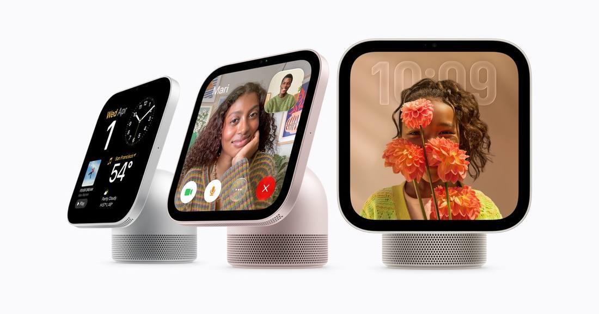

Apple HomeView Goes on Sale at $299, Putting Siri AI on the Kitchen Counter
Apple HomeView went on sale Friday, November 13, 2026, at $299 in the US for both the tabletop and wall-mounted models, in Australia, Canada, India, New Zealand, Singapore, the UK and the US. It is a 7-inch Liquid Retina display built around Siri AI, an entirely new version of Siri that is more capable and conversational, with broad world knowledge and onscreen awareness. It recognizes up to six people by face and shows each person's own content in Messages, FaceTime, Calendar, Reminders and Find My; personal content appears only when the user is recognized and their paired iPhone or iPad is present and recently unlocked. Siri AI is a beta in HomeView software 27.2, in English in eight countries, with Canadian French to follow. It is not sold in the EU because Siri AI is unavailable in iOS there. Wall mounts from Schneider Home start at $59.95; the PoE mount at $129.95 comes in early 2027. Announced October 13, pre-order since mid-October; the fourth-generation Apple TV 4K also went on sale today. Dual-verified: Apple Newsroom read in full at about 20:05 UTC plus MacRumors (2:37 am PST).

- 01ON SALE TODAY — Apple HomeView went on sale on Friday, November 13, 2026, at $299 in the US for both the tabletop and wall-mounted models, in Australia, Canada, India, New Zealand, Singapore, the UK and the US. It is a 7-inch Liquid Retina display built around Siri AI, an entirely new version of Siri that is more capable and conversational. It is not for sale in the European Union, because Siri AI is currently unavailable in iOS in the EU.
- 02WHAT IT DOES — HomeView recognizes up to six people by face and adapts to show each person's own content in Messages, FaceTime, Calendar, Reminders and Find My. Siri AI has broad world knowledge and onscreen awareness, and paired with an Apple Intelligence-enabled iPhone or iPad it can draw on personal context and take action across apps. Siri AI is a beta in HomeView software 27.2, in English in eight countries, with Canadian French to follow. Wall mounts from Schneider Home start at $59.95; the PoE mount at $129.95 comes in early 2027.
- 03THE WATCHPOINT — The November 12 review consensus and first sales signals; Apple's path forward in the EU, where the device cannot be sold until Siri AI is available in iOS there; and whether the new Siri feels ready in daily use or slow and limited, as some early reviewers found. The fourth-generation Apple TV 4K also went on sale today.
WHAT HAPPENEDWhat Happened
Apple's first smart display went on sale on Friday, November 13, 2026. Apple HomeView, a 7-inch Liquid Retina display built around Siri AI, is available from today in Australia, Canada, India, New Zealand, Singapore, the UK and the US, at $299 in the US for both the tabletop and the wall-mounted models. It is not for sale in the European Union, because Siri AI is currently unavailable in iOS in the EU; Apple says it is working constructively with the EU to find a path forward.
HomeView recognizes up to six people by face and adapts to show each person's own content in Messages, FaceTime, Calendar, Reminders and Find My. Siri AI, which Apple calls an entirely new version of Siri that is more capable and conversational, has broad world knowledge and onscreen awareness, so it can answer questions based on what is on the screen. Paired with an Apple Intelligence-enabled iPhone or iPad, it can draw on personal context such as Calendar and Messages and take action across apps. Personal content appears only when a user is recognized by face and their paired iPhone or iPad is present and recently unlocked. Siri AI on HomeView is a beta in HomeView software version 27.2, available in English in the US, Australia, Canada, India, New Zealand, Singapore, South Africa and the UK, with Canadian French support to follow via a free software update.
The tabletop model comes in silver, starlight, rose pink and space gray; the wall-mounted model in silver and space gray. Wall mounts from Schneider Home are sold separately: the Power Mount USB-C Wall Connector from $59.95 and the Power Mount AC Wired from $79.95, available today, with the Power Mount PoE Wired at $129.95 coming in early 2027. HomeView was announced on October 13 alongside the HomePod mini 2, which launched October 30, and has been available to pre-order since mid-October. The fourth-generation Apple TV 4K also went on sale today. The first reviews landed on November 12.
WHY IT MATTERSApple's smart home bet arrives with Siri AI doing the talking
HomeView is Apple's first product built around the new Siri, and the launch day is the first public test of whether that Siri is ready. The device's pitch is personalization without a login: face recognition picks the right person's messages, calendar and reminders, and Siri AI's onscreen awareness and personal context are supposed to make the answers feel specific rather than generic. That is the same promise Apple has made for Apple Intelligence since 2024, now embodied in a $299 screen that sits in the kitchen or hallway and is always listening.
The limits are printed on the launch itself. Siri AI is a beta with daily usage limits on some server-side features, and Apple says expanded access will be available for a fee in the future. The device is not sold in the EU at all, because Siri AI is unavailable in iOS there. And the wall-mounted model, the version most likely to live by a front door, costs $299 before a mount that starts at $59.95. The first reviews, published November 12, are the early verdict on whether the experience justifies the price; the sales figures Apple never discloses will be the real one.
WHAT TO WATCHReviews, EU timing and the Siri AI test
The next facts are the review consensus and the first sales signals: whether the November 12 reviews converge on HomeView as a genuinely useful home hub or as an expensive kitchen screen, and whether delivery times stretch past the first week of December, which would signal demand beyond Apple's launch stock. Watch for Apple's path forward in the EU, where the device cannot be sold until Siri AI is available in iOS there.
The longer test is Siri AI itself. HomeView is the first device where the new Siri is the whole product, not a feature inside a phone. If the beta feels slow or limited, as some early reviewers found, the device becomes a $299 screen for timers and calendars. If the personal-context answers land, HomeView becomes the template for Apple's next wave of home hardware. Either way, the answer arrives in the first weeks of real use, not in the launch announcement.
SIGNAL JUDGMENT — ANALYSISHomeView is the first device where the new Siri is the whole product
Tokenta Signal's judgment: HomeView matters less as a $299 screen than as the first public test of the new Siri. The face-recognition personalization and the personal-context answers are the pitch, and both have to work in a shared kitchen to justify the price. The launch itself prints the limits: Siri AI is a beta with daily usage caps and paid expanded access to come, and the device cannot be sold in the EU at all. Watch the November 12 review consensus and the first weeks of real use; that is where this Siri is actually judged.
WHAT REMAINS UNCERTAINWhat Remains Uncertain
EVIDENCEEvidence
Apple's announcement, 'Apple HomeView available today,' read in full at about 20:05 UTC on November 13, 2026. Apple says that beginning today, November 13, Apple HomeView is available for purchase at Apple Store locations, on the Apple Store online, and in the Apple Store app in select regions. It features a 7-inch Liquid Retina display along with Siri AI, is designed to be the center of the home and personal to everyone in it, recognizes up to six people by face, and adapts to show their personal content in Messages, FaceTime, Calendar, Reminders, and Find My. Customers in Australia, Canada, India, New Zealand, Singapore, the UK, and the US can order Apple HomeView for $299 (US), and Apple HomeView (Wall Mounted) for $299 (US). Apple HomeView is not available for sale in the European Union, as Siri AI is currently unavailable in iOS in the EU. Siri AI is available in beta in HomeView software version 27.2. MacRumors' report, published 2:37 am PST on November 13, confirms both products went on sale today, were announced on October 13, and were available to pre-order since mid-October.
PRIMARY SOURCESPrimary Sources
- Apple Newsroom: Apple HomeView available today
https://www.apple.com/newsroom/2026/11/apple-homeview-available-today/ - MacRumors: Apple Launches Two Products Today
https://www.macrumors.com/2026/11/13/apple-launches-two-products-today/ - 9to5Mac: New Apple TV 4K and HomeView now available
https://9to5mac.com/2026/11/13/new-apple-tv-4k-and-homeview-now-available-heres-everything-you-need-to-know/
RELATEDRelated Intelligence
- Nvidia Board Approaches Arm CEO Rene Haas as Huang Successor; Employees Push for Founder's Return
- Starship Flight 15 Lifts Off, but Booster Catch Aborted; Ship 42 Still Aims for Saturday Return
- Microsoft 365 Outage Passes 29 Hours as 22:00 UTC Update Says Recovery Sustained, Mail Backlog Still Draining
- FAA Clears Starship Flight 15 for Historic Double-Catch Attempt